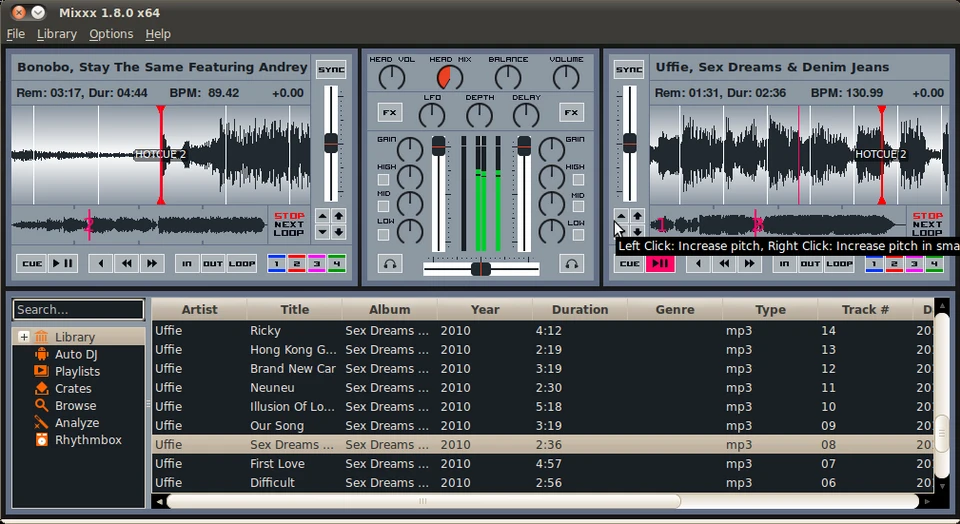
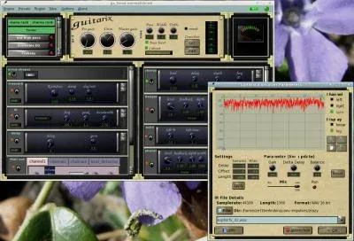
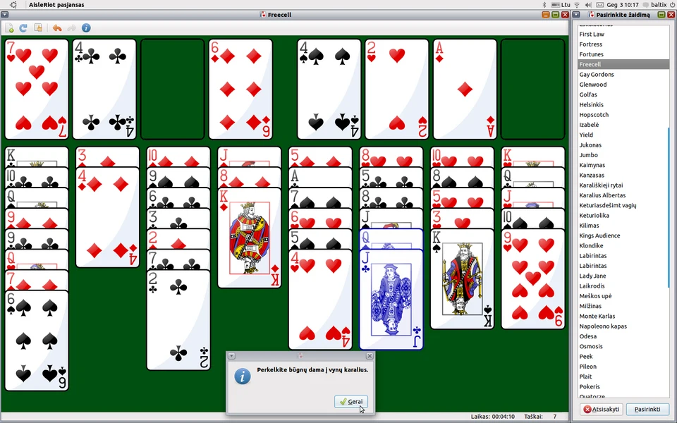
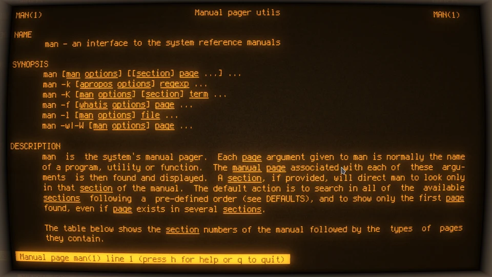

選定理由・ポピュラー
二つの曲を並べる配置と、中央で左右に動かすクロスフェーダーに注目してください。実物のDJミキサーを覚えた手が、そのまま頼れる形です。
作品・制作の例6件を紹介しています。実作品画像4点、参照・関連画像0点。画像の収集は継続中です。
現代の画面表現・説明用の分類
Skeuomorphism
画面の中に、ピアノの鍵盤や機械のつまみが現れます。本物で知っている形や使い方を、新しいものの理解に役立てる考え方です。ここでは、実物を思わせる画面表現を中心に紹介します。
実作品を見る

画像を表示できませんでした。下の出典ページで確認できます。
Mixxx 開発チーム / 2010年
二つの曲を並べる配置と、中央で左右に動かすクロスフェーダーに注目してください。実物のDJミキサーを覚えた手が、そのまま頼れる形です。
Mixxx／Wikimedia Commons（WebPへの変換・縮小）
出典で作品・資料を見る ↗実作品を見る

画像を表示できませんでした。下の出典ページで確認できます。
Guitarix 開発チーム / 2011年の画面
ギターをつなぐアンプのつまみや目盛りを、ソフトの中に移しました。音を変えるための数値が、手で回せそうな部品として並んでいます。
Hartmut Noack (zettberlin)／Wikimedia Commons（WebPへの変換・縮小）
出典で作品・資料を見る ↗実作品を見る

画像を表示できませんでした。下の出典ページで確認できます。
GNOME プロジェクト / 2012年撮影の画面
山札に重なりがあり、札を移す場所には札と同じ大きさの枠が空いています。机の上で遊ぶときの置き方が、そのまま次の操作の手がかりになります。
Mantas／Wikimedia Commons（WebPへの変換・縮小）
出典で作品・資料を見る ↗実作品を見る

画像を表示できませんでした。下の出典ページで確認できます。
Swordfish90 とコントリビューター / 2021年撮影の画面
プログラムの文字を表示するだけなら、発光のにじみを描く必要はありません。あえてその光り方を再現して、古いブラウン管を見ている感覚まで画面に移しています。
NairobiPapel／Wikimedia Commons（WebPへの変換・縮小）
出典で作品・資料を見る ↗実在する作品・制作物（個別の分野は domain を参照）
鍵盤、ギター、ドラムを画面の操作に使います。
作品・資料の出典を見る ↗原題：GarageBand for iPad：Touch Instruments
アップル / 2011 / 音楽アプリ
日本語の見出しは読みやすさのための呼び名・説明名です。原題は記録欄に示しています。
画像の転載条件は未確認。出典の公開は転載許諾ではありません。
実在する作品・制作物（個別の分野は domain を参照）
機材の裏を見てケーブルをつなぐ操作を、画面上で行います。
作品・資料の出典を見る ↗原題：Reason Rack
リーズン・スタジオズ / 継続更新／引用記録は2026年 / 音楽ソフト
日本語の見出しは読みやすさのための呼び名・説明名です。原題は記録欄に示しています。
画像の転載条件は未確認。出典の公開は転載許諾ではありません。
DJソフトウェアの画面
二つの曲を並べる配置と、中央で左右に動かすクロスフェーダーに注目してください。実物のDJミキサーを覚えた手が、そのまま頼れる形です。
作品・資料の出典を見る ↗原題：Mixxx 1.8.0
Mixxx 開発チーム / 2010年 / DJソフトウェアの画面
仮想ギターアンプの画面
ギターをつなぐアンプのつまみや目盛りを、ソフトの中に移しました。音を変えるための数値が、手で回せそうな部品として並んでいます。
作品・資料の出典を見る ↗原題：Guitarix gx_head
Guitarix 開発チーム / 2011年の画面 / 仮想ギターアンプの画面
カードゲームの画面
山札に重なりがあり、札を移す場所には札と同じ大きさの枠が空いています。机の上で遊ぶときの置き方が、そのまま次の操作の手がかりになります。
作品・資料の出典を見る ↗原題：AisleRiot — FreeCell
GNOME プロジェクト / 2012年撮影の画面 / カードゲームの画面
端末エミュレーターの画面
プログラムの文字を表示するだけなら、発光のにじみを描く必要はありません。あえてその光り方を再現して、古いブラウン管を見ている感覚まで画面に移しています。
作品・資料の出典を見る ↗原題：cool-retro-term
Swordfish90 とコントリビューター / 2021年撮影の画面 / 端末エミュレーターの画面
木目や革の飾りだけが特徴ではありません。つまみを回す、鍵盤を押す、といった操作のたとえも含めて考えます。似ているから必ず使いやすい、というわけでもありません。
木、金属、紙などを思わせる色が使われる場合があります。色だけでは決まりません。
文字は機械の目盛りやラベルのように配置されることがあります。
鍵盤やケーブルなど、元になった物が何か探します。
実物の配置を残す部分と、画面用に変える部分を見比べます。
ニューモーフィズムは、背景から浮き出るような柔らかな面の表現に重点があります。実物の細部まで写すこととは違います。
初めて使う人が操作を想像できるか、本物を知らない人でも使えるか、両方を確かめましょう。
ミキサーのつまみ、アンプ、トランプ、ブラウン管など、現実の道具の形や操作を画面に取り込んだ例を集めました。
作品・制作の例6件を紹介しています。実作品画像4点、参照・関連画像0点。画像の収集は継続中です。